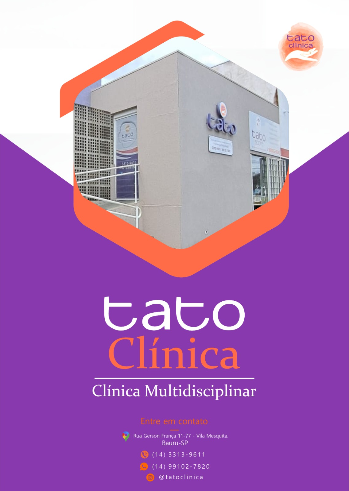

Avaliação Neuropsicológica
Investigação aprofundada de funções como atenção, memória e funções executivas para orientar o cuidado.
Clínica Interdisciplinar · Bauru/SP
Atendimento interdisciplinar e humanizado para crianças, adolescentes e adultos com questões do neurodesenvolvimento, baseado em evidências científicas e construído sob medida para cada história.
Há mais de 10 anos no mesmo endereço, na Vila Mesquita.


Sobre nós
Há mais de 10 anos no mesmo endereço, na Vila Mesquita, a Tato Clínica existe para apoiar o desenvolvimento de habilidades, a independência e a autonomia, tanto na esfera física quanto na cognitiva.
Acreditamos que cada pessoa merece viver de forma plena, com realização e pertencimento à sociedade. Para isso, reunimos uma equipe de profissionais capacitados e especializados em suas áreas, que atende com eficiência, ética e dedicação.
O que fazemos
Especialidades que se conectam em torno de um único objetivo: o desenvolvimento e o bem-estar de cada paciente.
Investigação aprofundada de funções como atenção, memória e funções executivas para orientar o cuidado.
Análise do Comportamento Aplicada para desenvolver habilidades e ampliar a autonomia no neurodesenvolvimento.
Terapia Cognitivo-Comportamental para trabalhar pensamentos, emoções e comportamentos de forma prática.
Apoio aos processos de aprendizagem com foco nas dificuldades escolares, estratégias de estudo e desenvolvimento cognitivo.
Intervenção sobre as dificuldades de aprendizagem a partir do funcionamento do cérebro e do comportamento.
Cuidado com a comunicação, a linguagem, a fala e a alimentação em todas as idades.
Desenvolvimento de habilidades para o dia a dia, com manejo sensorial e foco na participação e na independência.
A música como recurso terapêutico para expressão, vínculo e desenvolvimento.
Oferecer atendimento interdisciplinar, humanizado e baseado em evidências, acolhendo cada pessoa de forma integral e individualizada, fortalecendo potencial, autonomia, bem-estar e qualidade de vida em todas as fases.
Ser referência em atendimento interdisciplinar no neurodesenvolvimento, reconhecida pela excelência técnica e pelo acolhimento humano, transformando vidas e contribuindo para uma sociedade mais consciente, acessível e humana.
No que acreditamos
Cuidado com empatia, respeito e sensibilidade, valorizando a singularidade de cada indivíduo.
Escuta ativa, carinho e segurança para cada paciente e sua família.
Atuação com responsabilidade, ética e comprometimento técnico-científico.
Atuação integrada entre os profissionais para um cuidado completo.
Busca constante por atualização profissional e aprimoramento dos serviços.
Reconhecer e estimular o potencial único de cada pessoa.
Promover independência, participação social e qualidade de vida.
Suporte, orientação e parceria durante toda a caminhada terapêutica.
Quem cuida de você
Profissionais especializados, com registro e dedicação a cada história de desenvolvimento. Atendimento para crianças, adolescentes e adultos, conforme a especialidade.

Musicoterapeuta
Área de atuação Saúde mental · TEA/TDAH/Síndrome de Down · estimulação cognitiva em idosos · reabilitação infantil · apoio sensorial, motor e de linguagem.
Especialização ABA para autismo · música e cognição · educação especial · neuropsicopedagogia · arteterapia · psicanálise.

Terapeuta Ocupacional
Área de atuação TEA · TDAH · Síndrome de Down · atrasos neuropsicomotores · dificuldades sensoriais, motoras e cognitivas · adolescentes e adultos.
Serviços oferecidos Estimulação infantil · integração sensorial · AVDs · coordenação motora · funções executivas · autonomia · orientação familiar.

Terapeuta Ocupacional
Formação TO pela UFSCar · Integração Sensorial de Ayres · pós em ABA · Bobath Pediátrico.
Experiência e atuação TEA · TDAH · paralisia cerebral · Síndrome de Down · avaliação ocupacional · integração sensorial · Bobath · orientação familiar.

Fonoaudióloga
Área de atuação Mestre em Processos e Distúrbios da Comunicação · atraso de linguagem · transtornos de fala · TDAH · dificuldades de aprendizagem · leitura e escrita.
Serviços oferecidos Avaliação fonoaudiológica · terapia de linguagem · fala e articulação · leitura e escrita · orientação familiar.

Fonoaudióloga
Área de atuação Transtorno motor oral · motricidade orofacial · disfagia · TEA · atraso de linguagem · transtornos de fala · PROFFI.
Serviços oferecidos Avaliação fonoaudiológica · CAA · bandagem elástica · terapia ABA · Terapia ReST.

Neuropsicopedagoga
Área de atuação TDAH · TEA · dislexia, discalculia e disgrafia · transtornos globais do desenvolvimento.
Serviços oferecidos Avaliação neuropsicopedagógica · funções executivas · atenção e memória · plano de intervenção e devolutiva.

Neuropsicóloga
Área de atuação TDAH · TEA · dificuldades de aprendizagem · deficiência intelectual.
Serviços oferecidos Avaliação neuropsicológica · funcionamento cognitivo e comportamental · funções executivas · laudo e devolutiva.
Dê o primeiro passo. Fale com a nossa equipe e agende uma avaliação.
Onde estamos
Atendimento mediante agendamento prévio.